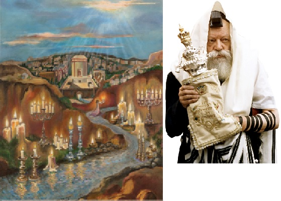

שלהי תמוז. השמש הניו–יורקית יוקדת על ראשיהם של החסידים שצועדים על שדרת איסטערן פ
שלהי תמוז. השמש הניו–יורקית יוקדת על ראשיהם של החסידים שצועדים על שדרת איסטערן פארקוויי, סמוך לבית רבינו שבבבל, משתתפים בצער רב בהלווייתה של אשה חשובה שהלכה לעולמה. ‘אוי, גלות’, נאנח אחד החסידים, ואי אפשר שלא להיזכר בדיווחים המחרידים על הטבח שביצע מחבל בן עוולה בליל שבת האחרון בארץ הקודש. עוד תזכורת

מסע הלווייה מסתיים והמלווים מתפזרים, איש איש לעיסוקיו. מזכירו של הרבי מלך המשיח, הרב יהודה לייב גרונר, פונה אל משרדו, ואני עולה אחריו, מלווה אותו בגרם המדרגות הנושק לקיר חדרו של הרבי, ומוביל אל המקום הקרוב ביותר לחדרו של הרבי והמבואה שלפניו, הנקראים בפי חסידים ‘גן עדן התחתון’ ו’גן עדן העליון’.
השקט השורר במקום, מזג האוויר הנעים והניחוח הייחודי ל–770, מחזיר אותי באחת חצי יובל אחור, אל ימי תשרי תשנ”ג, כאשר נכנסתי למשרדו של הרב גרונר כדי למסור פ”נים שהתבקשתי להעביר אל הרבי. באותם ימים, המסלול בין חדרו של הרבי אל המרפסת ממנה עודד הרבי את שירת ‘יחי אדוננו’ - עבר סמוך למשרדו של הרב גרונר, ובעמדי שם, תהיתי בלבי מה יקרה אם בדיוק כשאהיה שם, הרבי יצא מחדרו… גם כעת, כשעמדתי מעברה השני של הדלת הנפתחת אל גן–עדן התחתון, החלו לעלות המחשבות על רגעי ההתגלות…
סיפרתי על כך לרב גרונר, ושאלתי אם שמע פעם מהרבי ביטוי מיוחד על רגעי ההתגלות? ניצוץ נדלק בעיניו, והוא שיתף אותי בסיפור שאירע לו עצמו לפני שנים רבות, בשנות היו”דים: ‘עמדתי עם עוד כמה מזקני אנ”ש בגן–עדן התחתון ושוחחנו. לפתע נפתחה דלת חדרו של הרבי, ולהפתעתנו יצא הרבי פתאום מחדרו. כאשר הרבי ראה אותנו נסוגים בבהלה, אמר: כך יהיה כאשר משיח יבוא. הוא יבוא פתאום, משיח בא בהיסח הדעת, וכולם ירעדו מפניו’.
השיחה על רגעי ההתגלות המיוחלת, מזכירה לרב גרונר סיפור נוסף, שקשור לתפקידו כמזכירו של הרבי לאחר ההתגלות: ‘פעם בביקורי אצל האדמו”ר ‘לב שמחה’ מגור, סיפר לי אחד המשב”קים כי שאל פעם את רבו מה יהיה עליו לאחר ביאת המשיח, וענה לו רבו: כשם שהסתובבת לידי עכשיו, כך יהיה גם לעתיד לבוא! כאשר שבתי ל–770 ונתתי לרבי דו”ח על ביקורי, סיפרתי גם על שאלתו של המשב”ק ומענה האדמו”ר מגור. הרבי הביט בי ועל פניו הופיע חיוך רב–משמעות…’.
בהיסח הדעת, פתאום
“פתאום יבוא האדון אל היכלו”. אין לי מילים אחרות להתחיל את תיאור הרגעים הבאים, ולמען האמת גם הביטוי הנבואי הזה החוויר לעומת רצף האירועים העוצמתיים שהחל באותן שניות שלעולם לא יישכחו.
את הדממה פילח קול שופר חזק, שהלך והתגבר מרגע לרגע, עד שנשמע מכל קצוות תבל. ברגע הראשון לא הבנתי מה פשר הקול האדיר והניסי הזה, ואז הכתה בי ההכרה: זהו שופרו של משיח! הרגע המיוחל והנשגב, לו ציפו יהודים במשך אלפיים שנות גלות, בערגה ובכיסופים - סוף סוף הגיע!
ברגעי–הוד קסומים אלו, נזכרים כולם בדבריו של הרבי מלך המשיח שליט”א1 “שיהודי מאמין באמונה שלימה, שמשיח צדקנו, “מלך מבית דוד הוגה בתורה ועוסק במצות כו’”, ובתור “משיח ודאי” (על ידי זה ש”עשה והצליח ובנה מקדש במקומו וקבץ נדחי ישראל”) - נכנס כעת ממש לבית הכנסת, יבוא ויגאלנו ויוליכנו קוממיות לארצנו, הוא מוליך את כל בני ישראל בתוך כלל ישראל לארץ הקודש, לירושלים עיר הקודש, להר הקודש, לבית המקדש השלישי”…
שניות בודדות חולפות, והנה מגיע הרגע הנפלא בו הרבי מלך המשיח נכנס במלוא הדר מלכותו לתוך בית הכנסת, וכל אחד ואחד מראה באצבעו2 ואומר “הנה זה מלך המשיח בא” - - –
מכל עבר נשמעת ברכת ‘שהחיינו’ נרגשת, ואחריה שאר הברכות3 שמברכים בראיית פניו של המלך המשיח - החל מברכת ‘שחלק מחכמתו ליראיו’, אותה מברכים כאשר רואים מלך ישראל; וברכת ‘חכם הרזים’ - אותה מברכים כאשר רואים שישים ריבוא (600,000) או יותר אנשים מקובצים יחד, או כאשר רואים אדם ששקול בחכמתו כנגד חכמת אנשים בכמות כזו. כעת אפשר לברך ברכה זו משתי הסיבות גם יחד. ועד לברכת ‘גאל ישראל’ בנוסח שתיקנו בסוף ההגדה - ‘ונודה לך שיר חדש על גאולתנו ועל פדות נפשנו… ברוך אתה ה’ גאל ישראל’”.
מיד לאחר מכן פוצח הקהל כולו בשיר החדש–ישן ‘יחי אדוננו מורנו ורבינו מלך המשיח לעולם ועד’, ואי אפשר שלא להזכר באותן שנות גלות, כאשר שרנו מול הרבי ‘יחי אדוננו’, והרבי עודד את השירה בתנועות ראשו - איך כל תנועת עידוד העצימה את השירה, ויחד עמה את האמונה והתקווה שהנה הנה הרבי יתגלה כבר, אך למרבה הצער שוב הוסט הווילון, ועמו נמשך ההעלם וההסתר… אך לא עוד. סוף סוף מתקיים בנו הייעוד “ולא יכנף עוד מוריך והיו עיניך רואות את מוריך”.
לעבור, או לא לעבור?…
בסמוך אליי מתקהלים כמה משפיעים ומתדיינים ביניהם בהתרגשות. הזקן שבחבורה נזכר בנוסטלגיה במשפיע ר’ שלמה חיים קסלמן, שהיה מדבר על כך שההתנהגות היום–יומית שלנו בכל תחומי החיים בזמן הגלות, תשפיע על מה שיקרה כשהמשיח יבוא, היה מזכיר תמיד את הפסוק ‘ובאו בנקיקי הצורים ובסעיפי הסלעים מפני פחד ה’ והדר גאונו וגו’. והיה אומר שכאשר המשיח יבוא, מי שלא ילמד חסידות, לא יתבונן בחסידות ולא יתכונן מראש כראוי לביאתו, ייאלץ לברוח ולהתחבא מרוב בושה ופחד מפני כבוד השם שיתגלה אז בעולם. “כתוב שמשיח יהיה ‘מורח ודאין’ [=ישפוט על–פי הריח]”, אמר ר’ שלמה חיים, “וכאשר המשיח ‘יריח’ את המצב הרוחני שלנו, נתבייש מאוד מפניו וניאלץ לברוח ולהתחבא מרוב בושה”.
אחד מחסידי פולין שהאזין בקשב לדיון, אמר כי ראה פעם בשם הרב הקדוש רבי מנחם מנדל מרימנוב, ש”כל אחד ואחד מצפה לראות את תואר פני המשיח, אך לא יודעים כי משיח גובהו מארץ עד לשמים, וכולו מלא שמות קדושים וכל הרואה אותו יזדעזע כל כך עד שלא יכול למצוא מקום מרוב פחד ובהלה”… לאידך, מסופר ששאלו פעם את הרב הקדוש רבי דוד מטולנא: “למה לנו לבקש על המשיח? הרי כשמשיח יבא נצטרך לירד למערות ולמרתפים כדי שלא יראה אותנו בחרפתנו בזויים וירודים בעוונות ופשעים”. השיבם הצדיק רבי דוד: “דעו לכם, שכשיבא משיח צדקנו, תהיה הזדככות המוחות בעולם עד כדי כך שאפילו היהודי הפחות שבפחותים יוכל להתקרב ולהתראות עם המשיח”.
את הוויכוח הכריע דווקא אחד מתלמידי התמימים, ששלף מארון הספרים הסמוך ‘דבר מלכות’ והקריא בקול את דבריו של המלך המשיח בעצמו: “כל אחד מאתנו אומר למשיח צדקנו “שלום עליכם”4, והוא משיב לכל אחד בנפרד “עליכם שלום”, ו”עליכם שלום” לכל בני ישראל יחדיו”.
התמימים - מהראשונים לקבל פני משיח
התור לקבלת פני משיח ארוך כמובן, אבל בתחילת התור עומדים תלמידי התמימים, ובראשם - לא פחות ולא יותר, הרבי הרש”ב מייסד הישיבה והרבי הריי”צ המנהל פועל של הישיבה. שניהם התבטאו בזמן הגלות שיזכו להיות מהראשונים שיקבלו פני משיח5 ולומר ‘ראו גידולים שגידלתי’6, והנה זה מתרחש לנגד עינינו.
בעזרת הנשים עומדות נשות ישראל, עם תופים, כשהן שרות בתכלית הצניעות ורוקדות במחולות על בוא הגאולה האמיתית והשלימה7.
גם ילדי צבאות ה’ עומדים בתור מסודר. אני מזהה שם את מנהל הפעילות הנמרץ של צבאות ה’ ר’ שימי וויינבאום, ומנסה לברר אצלו האם הילדים קולטים בכלל מה שמתרחש לנגד עיניהם… ר’ שימי לא מבין את השאלה. “הילדים, הם הרי הראשונים לקלוט את הדברים האלה!”, הוא אומר בהתלהבות. “עוד בזמן הגלות הרבי רומם אותם לדרגות רוחניות גבוהות מאוד. תאר לעצמך, שאדמו”ר הזקן כתב בתניא שעבודת הצדיקים היא משהו שרק אפשר לחלום עליו, שאפשר רק להשתדל להגיע לזה, אבל תכל’ס, מי שמקבל את הדרגה הזאת, מקבל אותה בתור ‘מתנה’ מהקב”ה. והנה הגיע הרבי, ואמר לילדים שהם יכולים להרגיש אלוקות, עד כדי כך שהם יכולים להפוך את היצר הרע ליצר טוב. הרבי דרש מהילדים להיות בדרגת צדיקים!”.
“האימונים של הילדים בזמן הגלות - הכינו אותם לרגעים האלה, וכעת הם מסוגלים יותר מכולם להכיל את הגילוי האלוקי. לא לחינם ניבאו הנביאים שדווקא הילדים יהיו אלה שישעשעו עם נחשי פתן וצפע. הרבי הסביר פעם שהכוונה היא ליצר הרע שנקרא נחש הקדמוני. כעת הילדים צפויים לשלוט בו בצורה מוחלטת, ולא לחשוש ממנו עוד.
“מי שלמד חסידות בזמן הגלות, הבין שעיקר העניין של ביאת המשיח, זה הגילוי אלוקות שיהיה בעולם, עד שלא יהיה עסק כל העולם אלא לדעת את ה’ בלבד. הרבי לקח את הילדים כבר בזמן הגלות לאטמוספירה הזאת, של אלוקות ורוחניות בחיי היום יום”.
שמחה מצד אחד, געגועים מצד שני…
התזכורת הזאת של העבודה הרוחנית בזמן הגלות, מעוררת פתאום געגועים מוזרים, דווקא לעבודת ה’ בזמן הגלות… בדיוק השבוע קראנו בהיום יום את דבריו של הרבי הרש”ב, שכשמשיח יבוא במהרה בימינו אמן, אז יתחילו להתגעגע לימי הגלות. אז יחרה מדוע לא עסקו בעבודה. אז יפנימו את גודל הכאב של העדר העבודה. אחד החסידים שעומד לידי לקח את זה קצת יותר קשה. הוא פשוט תולש את שערות ראשו מרוב צער על מה שהפסיד בזמן הגלות8…
הגעגועים האלה בהחלט מוזרים… רק לפני כמה שעות היינו שם, בגלות. ופתאום הכל נראה כל כך רחוק… עוד יותר מוזר: פתאום כל השנים שחלפו מאז ג’ תמוז, ואפילו כל אלפיים שנות הגלות - נראים כמו רגע אחד קטן, ממש כמו שהנביא אומר “ברגע קטן עזבתיך, וברחמים גדולים אקבצך”. מסתבר, שכאשר מתגלים ה”רחמים גדולים” של הגאולה, חשים כיצד לא היתה כל הגלות הארוכה אלא “רגע קטן” בלבד1.
אבל אחרי הכל, עדיף להיות בגאולה ולהתגעגע לזמן הגלות, מאשר להיות בגלות ולהתגעגע לגאולה…
לידי עומד חבר הוועד להפצת שיחות, הרה”ח ר’ נחמן שפירא. אני משתף אותו בתחושותיי, והוא מסב את תשומת ליבי לאור האלוקי שממלא את העולם כולו, ופתאום העולם כולו נראה אחרת לגמרי. האור הזה מאפשר לנו להביט גם אל העבר, אל שנות הגלות, ולהבין את ההתרחשויות האמיתיות שאירעו…
פתאום כל ה’העלם וההסתר’ של ג’ תמוז תשנ”ד, וכל השנים שאחריו, נראים כמו גילוי אחד גדול, שלא הצלחנו לקלוט אותו בזמנו. גם כעת קשה לי עדיין לעכל את זה, ורק שוב מתגנבת ללב אותה תחושה של החמצה, שלא השכלנו לראות את הדברים באור הנכון. מזלנו הגדול, שהשתדלנו לחיות גאולה ומשיח, למדנו את שיחות ה’דבר מלכות’, כך שבאופן כללי ידענו והאמנו כבר אז שזה רק ניסיון, ובאמת זהו שלב נוסף בגאולה. אבל אחרי הכל אין מה להשוות את התחושה הברורה כעת, שמקיפה את כל כולי, לעומת התחושה בזמן הגלות…
אני מפליג אחורה בזמן, לשיחות של נ”א ונ”ב, ופתאום הכל ברור. כל השאלות, אי–ההבנות, חוסר הבהירות - הכל סר ונעלם. פשוט רואים תהליך אחד שהתחיל אז, כן בקיץ תנש”א, כאשר הרבי מלך המשיח מכריז “ענווים הגיע זמן גאולתכם”. פתאום ברור שזו אכן הייתה ה”שנה שמלך המשיח נגלה בה”, והשנים שחלפו מאז לא היו הפסק בתהליך הגאולה, אלא חלק בלתי נפרד ממנו. רק שאז לא השכלנו לראות…
שופרו של המשיח מחולל פלאים
הדברים קורים במהירות גדולה כל כך. כאילו בתוך חלקיק שניה החל תהליך הגאולה ההיסטורי לקרום עור וגידים. בלי הודעה מוקדמת, הכל פשוט קרה. כאן ועכשיו, תוך כדי התאמה מושלמת בין תהליך הגאולה הגשמי, לתהליך הרוחני. כאילו אין גבול ומחיצה בין הרובד הגשמי לרוחני.
במקביל להתרגשות העצומה לשמע קול שופרו של משיח, החל הלב להתמלא בתשוקה עצומה לעלות לבית המקדש ולהשתחוות מתוך ביטול מוחלט לקב”ה. בתת–הכרה נזכרתי במאמר “והיה ביום ההוא יתקע בשופר גדול”9 בו הסביר הרבי ששופרו של משיח נועד לעורר את הרצון העצמי של היהודי להתבטל לקב”ה, ולכן עבודת ה’ מתוך ביטול מחישה את הגילוי של השופר גדול. מי היה מאמין שכל אותם רגעים קטנים בזמן הגלות, בהם הפנמנו שההצלחה אינה בזכות מעלתנו אלא בזכות הכוח שניתן לנו מלמעלה - יציתו כעת את תחושת הביטול המדהימה הזאת.
הלב הולך ומוצף בתחושות רוחניות שכלל לא היו מוכרות בזמן הגלות. גם מבעד לעיניים הגשמיות, מתחילים להראות לפתע מימדים רוחניים. ניצוץ המשיח שבנשמתי, זה שעד לפני כמה שניות היה מושג רוחני ערטילאי, מפעם כעת בעוצמה רבה. לא רק את ניצוץ המשיח שלי אני חש. שדרת איסטערן פארקוויי, הולכת ומתמלאת במהירות, אבל לנגד עיני אני לא רואה רק אנשים, אלא אלפי ניצוצות של משיח, שמתחברים כולם לאבוקה אחת גדולה, ששורפת את שיירי הגלות, ומאירה את העולם באור יקרות10.
שדירת איסטערן פארקווי מעולם לא הייתה מלאה כמו ברגעים אלו. משטרת ניו–יורק הזניקה לשמים כמה מסוקים, ומכל הניידות בברוקלין מושמע מסר אחיד11: Important message: The Messiah has come, now in 770 Eastern Parkway. I repeat, The Messiah is in 770 Eastern Parkway. (הודעה חשובה: המשיח הגיע והוא כעת ב–770 איסטרען פארקווי. אני חוזר: המשיח ב–770 איסטרן פארקווי)! האזור כולו פקוק לחלוטין, ואנשים פשוט נוטשים את רכביהם ונוהרים רגלית לכיוון 770.
מבחוץ נשמע קול רעם אדיר, מתגלגל… משהו גדול קורה שם… יצאתי אל חצר בית חיינו, ולנגד עיני התגלה מחזה מפעים ומלהיב: מבנה גדול–מימדים ירד במהירות הבזק מן השמים כשהוא נתמך בעננים לבנים ובוהקים, הסתיר לרגע קט את אורה המסנוור של השמש, ונחת ברכות מפתיעה על שדירת איסטערן פארקוויי. מבעד לחומות שהקיפו את המבנה הענק, התנשא אל על ההיכל המפואר של בית המקדש השלישי, שברגעים אלו ממש נשקו והתחברו חומותיו ל’בית רבינו שבבבל’.
אחד החסידים שעומד לידי, מסביר בהתרגשות לבנו הצעיר, קטע מתוך הקונטרס ‘בית רבינו שבבבל’, שהוציא הרבי בקשר עם בניית 770, ובו הסביר שלאחר חורבן בית המקדש, השכינה שורה אמנם בכל בית כנסת ובית מדרש, אבל בכל דור יש מקום אחד שבו שורה ‘עיקר שכינה’ בדוגמת בית המקדש, ומקום זה הוא ביתו של נשיא הדור, ובדורנו - זהו 770, בית מדרשו של נשיא הדור. הרבי גילה באותו קונטרס נפלא, “שהמקדש דלעתיד יתגלה תחילה בהמקום “שנסע מקדש וישב שם” (“בית רבינו שבבבל”), ומשם יועתק למקומו בירושלים”, והסביר זאת על פי דברי חז”ל, שבזמן הגאולה “הקב”ה שב עמהן מבין הגלויות”, ומכיוון שעיקר שכינה נמצאת בבית רבינו שבבבל - הרי שבמקום זה, בית רבינו שבבבל, מתחילה ונעשית גאולת השכינה! וכשם שגאולת השכינה מתחילה בבית רבינו שבבבל, גם שיבת מקדש העתיד מתחילה בבית רבינו שבבבל, ששם מתגלה בית המקדש תחילה, ואחר–כך נעתק למקומו בירושלים.
החסיד שלצידי מצטט לבנו שוב ושוב את דברי הרבי מתוך הקונטרס, ומדגיש שהרבי חזר על החידוש הזה כמה וכמה פעמים במהלך הקונטרס; אולי בגלל החידוש העצום. ‘בזמן הגלות אנשים התקשו להפנים עד כמה גדולה קדושתו של בית רבינו שבבבל’, הטעים החסיד. ‘בפרט כאשר למעלה מעשרים שנה לא ראינו את הרבי ב–770. כשאמרתי לחברים שלי שעיקר השראת השכינה בעולם בדורנו, זה ב–770, ומכאן תתחיל התגלות השכינה, כולל ירידת בית המקדש - הם התקשו להאמין, עד שהראיתי להם את דברי הרבי, שחור על גבי לבן… והנה תראה איך הכול מתממש מול עינינו!
•
קהל הרבבות פוצח בריקוד ושר בהתלהבות את ‘ניע זשוריצי חלאפצי’, עליו אמר הרבי שזהו ריקוד של משיח, ופתאום הכל מתחיל להסתחרר סביבנו… עוד רגע קט, והנה 770 עם בית המקדש שלצידו ממריאים על ענן ענק, ואיתו רבבות היהודים שכבר הספיקו להגיע לכאן - היישר להר הבית בירושלים…
על מה שאירע בירושלים - תקראו בכתבתו המרתקת של מנחם זיגלבוים…
מה תעשה כאשר משיח יבוא?
מספר הרב אברהם אייזנבך: “בחור מישיבה תיכונית שלא גידל זקן, הגיע פעם לבקר בישיבה בשבת. הוא ניגש לשוחח עם המשפיע ואחת הדרישות של המשפיע ממנו היתה שיתחיל לגדל זקן. בעת ההתוועדות ביום השבת פנה המשפיע ר’ שלמה חיים קסלמן, לאותו בחור ואמר לו: תאר לעצמך יהודי שעומד בביתו בערב שבת ומתלבש לכבוד שבת. פתאום מתרחשת רעידת אדמה, כותלי הבית נופלים והוא מוצא את עצמו עומד באמצע הרחוב, ברשות הרבים, בלי בגדים. מה יעשה האיש? יתפוס מיד בגד כלשהו, איזו מגבת או סדין ויכסה את עצמו בכל מחיר. אבל מה תעשה כאשר משיח יבוא - והרי משיח עומד להגיע בכל רגע - ואז ידעו כולם שחייבים לגדל זקן, ואתה תהיה בלי זקן? הלא יארך זמן–מה עד שיצמח לך זקן, ובינתיים תתבייש להסתובב ברחוב בלי זקן! בלית ברירה תיאלץ לתפוס איזו עז, לתלוש ממנה את ה’זקן’ שלה ולהדביק אותו על פניך, כדי שמשיח לא יתפוס אותך בלי זקן. ואם לא תמצא עז, תצטרך לגזור את הבלורית שלך ולהדביקה לסנטרך במקום זקן… ולמה לך כל זאת? האם לא עדיף שתתחיל לגדל זקן מעכשיו?!” (מתוך הספר ‘המשפיע’)
1) שיחת שבת תשעה באב תנש”א.
2) שיחת שבת פרשת תזריע–מצורע תנש”א.
3) הברכות בראיית המשיח - הגר”ח פלאג’י זצ”ל בשו”ת לב חיים חלק ב’.
4) שבת פרשת במדבר תנש”א.
5) שיחת י”ט כסלו תרפ”ז.
6) תורת שלום.
7) ש”פ פרשת בשלח תשנ”ב.
8) ספר השיחות תש”ב, עמ’ 9.
9) מאמר “והיה ביום ההוא יתקע בשופר גדול” תשכ”ח, הוגה לקראת ר”ה תשנ”ב.
10) על פי שיחת ח”י אלול תשמ”ב.
11) על פי שיחת ליל א’ דחה”ס תנש”א.